화학공정계산 (murphy) 5장:분리기
분리기술은 크게 세가지로 나뉜다:기계적, 속도 기초, 평형 기초 분리
기계적 분리: 두 상으로 이루어진 혼합물을 분리하는 기법
속도 기초:분리될 성분의 이동속도 차이에 의한 기법
평형 기초 분리:단일상 혼합물일 때, 상을 2개로 분리(에너지 or 분리제 도입)
모든 분리의 기초는 물성의 차이이다.
분리기술의 선택을 위한 간편추론법
1.원료가 두 상으로 이루어지면 기계적인 분리
2.원료가 단일 상이면 평형 기초 분리
3.고순도 소량 생산-속도기초 분리
4.평형기초분리를 하기로 택했다면 끓,녹,용매에서 용해도,고체표면에서 결합성의 차이를 순서대로 조사하라.
5.가능한 한 대기 조건에 가까운 환경에서 조업하기를 권장한다.
6.이물질 첨가 X, 만약 첨가했다면 즉시 분리
7.극소량을 회수하는 경우, 투입량보다는 회수량에 따라 가격이 올라가는 공정을 택하라.
8.극소량의 경우 화학적파괴를 시키는 것도 좋다.
분리 순서
1.유해한 물질을 먼저 분리
2.가장 많은 물질을 분리
3.어려운 분리는 마지막에
4.증류시에는 가장 휘발성이 큰 것부터
5.가끔 흐름을 분할해서 분리할 수도 있다.
6.과다한 고순도는 필요없다.
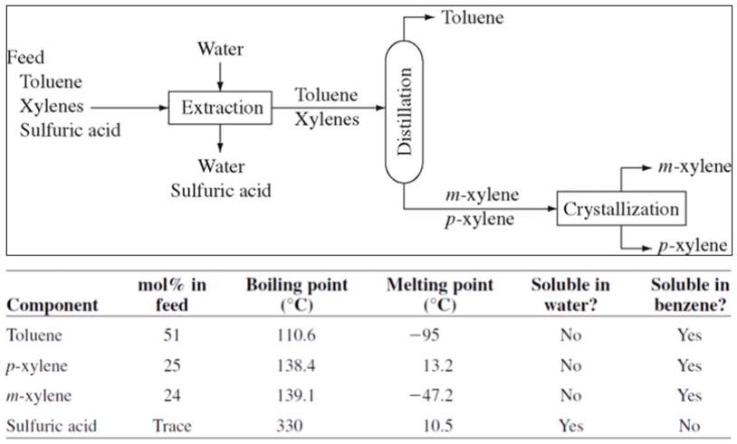
EX) 평형기초 분리이므로 끓,녹,용해도를 조사하였다. 위험한 황산부터 분리하고 이후 증류할 때 휘발성이 큰 톨루엔을 분리하였다. 이후 결정화(온도를 낮춰야 해서 어려움)을 진행하며 마무리한다.
제품순도, 성분회수율, 분리인자
제품순도:P중 원하는 성분의 몰 비율
성분회수율: 넣은 성분대비 얼마만큼 회수되었는가?
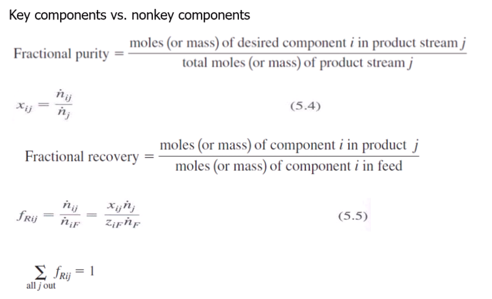 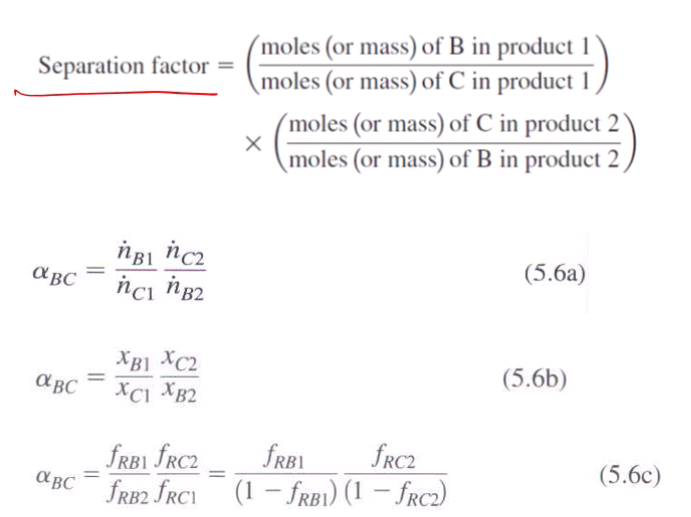
분리기가 완전하지 않는 이유:동반흐름과 평형
동반흐름: 물과 모래가 섞이면 모래를 퍼내도 모래에 물이 남아있다.
평형:분리기를 떠나는 흐름은 평형관계에 있어 온도, 압력, 포텐셜이 같다.
상평형에 대한 조금 더 자세한 정보
1성분 상평형도: P-T 다이어그램
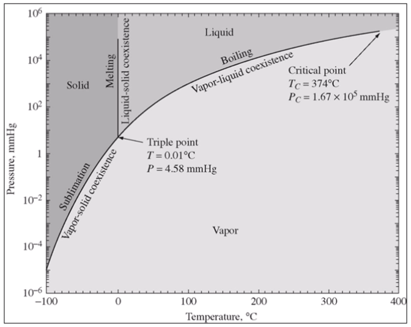
2성분 상평형도: 보통 X축은 성분 하나의 몰분율, y축은 온도나 압력이며 하나는 고정되어 있다.
액-고 상평형: saturated or unsaturated
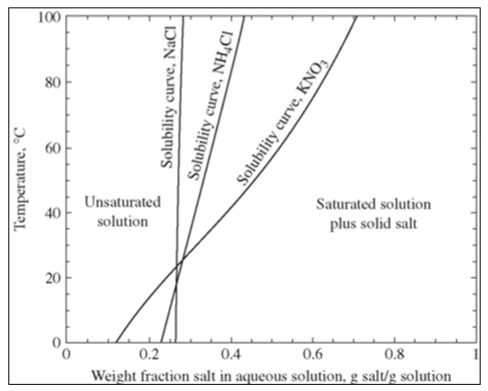 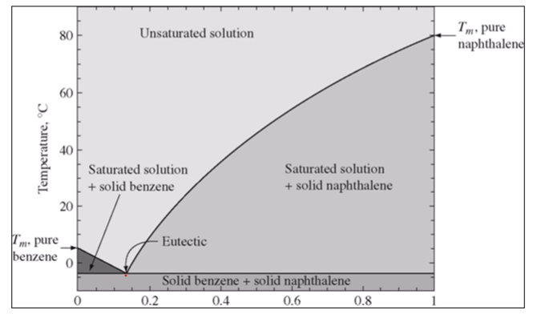
V-L상평형:
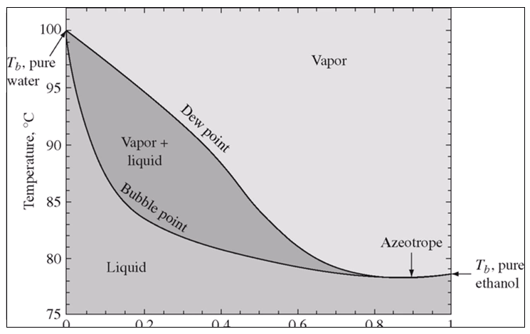 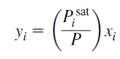
데이터가 없어도 라울의 법칙으로 상평형도를 그릴 수 있다.
Gas-L 상평형
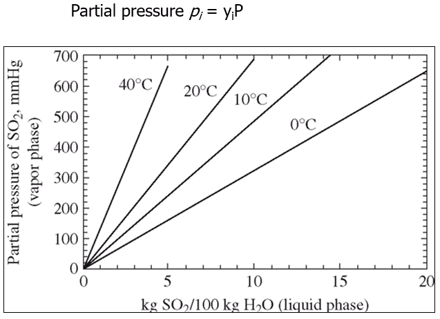
이건 기체와 물이 두개의 상으로 이미 분리되어 있는 경우이다. 이때, 기체의 일부는 액체상으로 들어가게 된다.
기상에는 공기와 같은 다른 기체도 있으므로, 특정 성분의 분압이 y축에 들어가게 되고 x축은 액체대비 기체성분의 무게분율이다. 주어진 전압과 기체의 몰분율로부터 분압을 계산한 후 온도와 분압을 찍으면 액체에 얼마만큼 녹아있는지가 x값으로부터 도출된다.
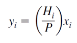
데이터가 없어도 헨리의 법칙으로 평형직선을 그릴 수 있다.
액-액 상평형:물과 기름처럼 안섞이는 액체에 특정 물체를 넣으면 두 층 모두에 분산된다. 이때 얼마만큼 분산되는지
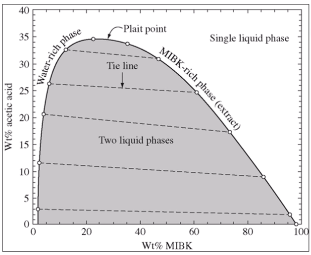
두개의 질량 분율만 주어지면 나머지 하나의 분율도 계산된다.
흡착의 경우(특수 케이스):성분이 고체에만 붙고 액체에는 녹지 않는다.
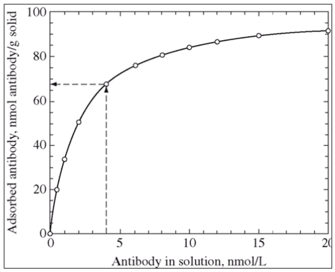
흡착제의 양 (x축)이 늘어나면 흡수되는 양도 늘어난다.
지금까지의 내용을 요약하면 다음과 같다.
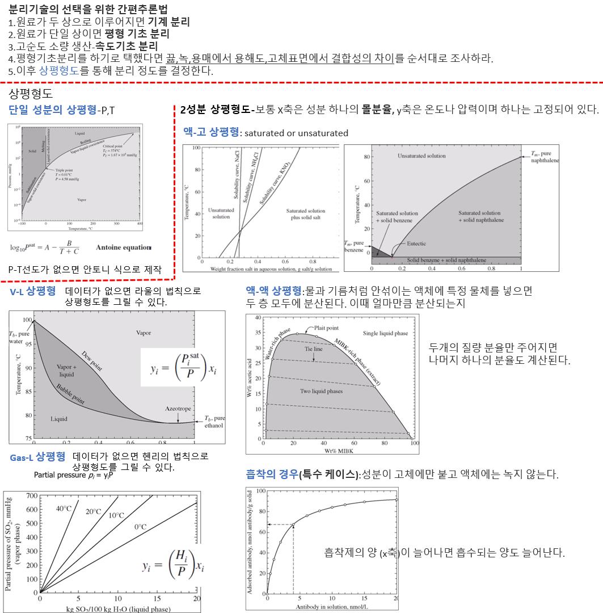
이제 상평형도를 통해 실제로 물질을 분리하는 예제를 살펴보자.
분리제로서 에너지를 사용하는 분리: 결정화, 증발, 응축, 증류
분리제로서 물질을 사용하는 분리:흡착,흡수,추출
1.결정화
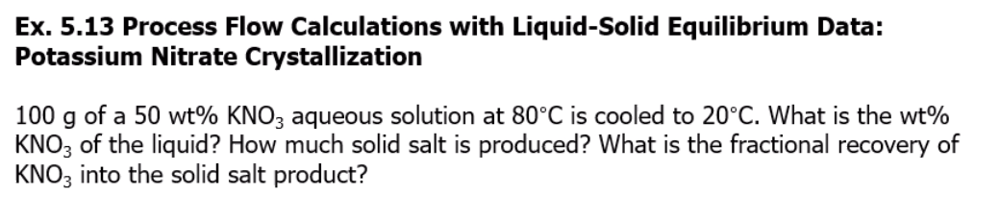
80도의 KNO3 수용액을 20도로 낮추었을때, 분리되는 물질의 조성 및 유량을 파악하는 문제이다.
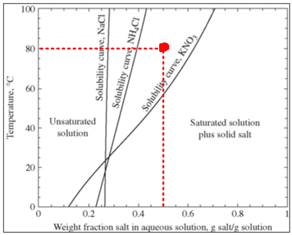 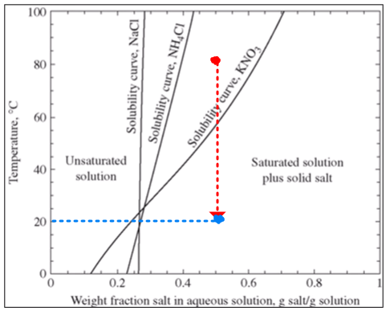
냉각시 파란점으로 이동하게 되는데, 이 점은 고체+포화액체 영역에 존재한다.
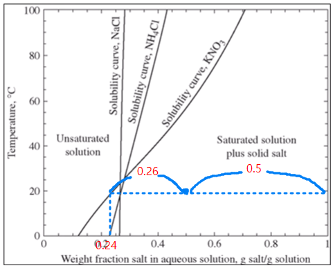
따라서 100% 농도의 KNO3고체와 24%농도의 수용액이 만들어진다. 이때 50/76 비율로 액체, 26/76비율로 고체가 만들어진다. 따라서 66g의 수용액과 34g의 고체가 만들어지며 수용액의 24%는(15.84=16g) KNO3이다.
나머지 분리도 다 비슷비슷하게 일어난다. 온도를 조절하여 상을 2개로 만들어 분리하는 것이다.
그러나 때로는 온도 조절말고 분리제를 넣어서 분리해야 하는 경우가 있다. 경제적인 문제거나 온도 민감성 때문이다. 이 경우 흡수, 흡착, 추출을 이용하게 된다.
흡수:기체에 섞인 불순물이 액체에 흡수되는 것, 성과는 용매의 선택에 달려있다.
흡착:유체에 섞인 불순물이 고체에 붙는 것
추출:액체 혼합물 중 하나가 용매에 녹아든다